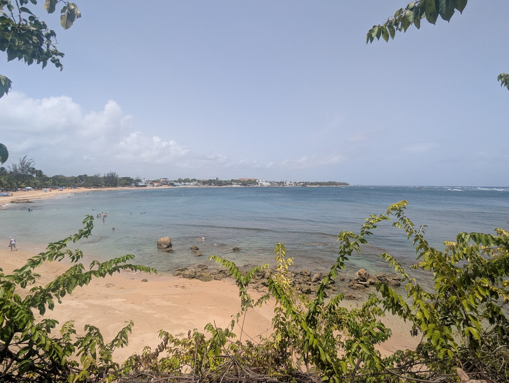
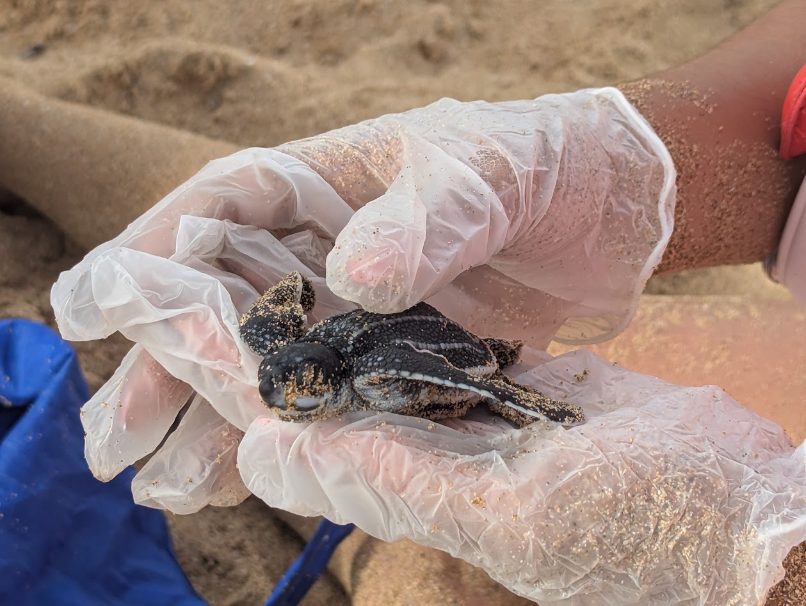
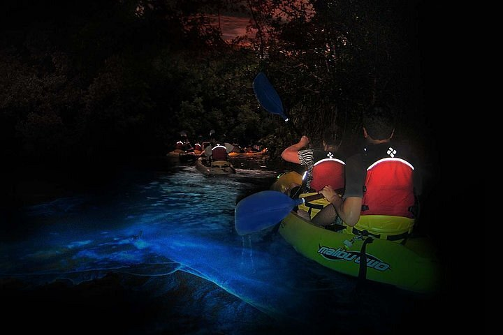

El Yunque: Take a hike to the beautiful sights this rain forest has to offer. Like the historical Yokahu observation tower. Feeling more adventurous? Lace up your hiking boots and discover the three beautiful waterfalls that you can even swim in!




